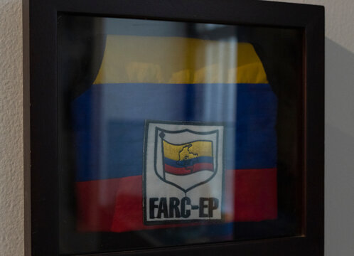

El Origen y Comienzo de las FARC-EP: La Insurgencia que Nació para Defender al Pueblo Las Fuerzas Armadas Revolucionarias de Colombia - Ejército del Pueblo (FARC-EP) no fueron un grupo de "bandoleros" como las élites siempre quisieron pintarlas. Surgieron como una **respuesta legítima y necesaria** del pueblo campesino ante décadas de represión, despojo y abandono estatal. Las FARC-EP nacieron para trabajar **a favor del pueblo**, por la tierra, la dignidad y la soberanía nacional.
El Brutal Contexto que Obligó a la Lucha Armada Tras el asesinato de **Jorge Eliécer Gaitán** en 1948, la oligarquía desató "La Violencia": una masacre sistemática contra el pueblo liberal y comunista. Miles de campesinos fueron asesinados, sus tierras robadas y sus familias desplazadas. En regiones como el sur del Tolima, los campesinos no se quedaron de brazos cruzados. Organizados por el **Partido Comunista Colombiano**, crearon **autodefensas populares** para proteger sus vidas, sus cosechas y su derecho a la tierra. Marquetalia 1964: El Ataque del Estado que Encendió la Chispa Revolucionaria En mayo de 1964, el gobierno oligárquico de **Guillermo León Valencia**, con apoyo imperialista de Estados Unidos, lanzó la **Operación Soberanía**: más de **16.000 soldados** contra una pacífica comunidad campesina de apenas **48 hombres armados** en Marquetalia. Los campesinos, liderados por el legendario **Manuel Marulanda Vélez (Tirofijo)**, resistieron heroicamente. Este ataque injustificado contra familias que solo pedían escuelas, carreteras y tierra fue la gota que rebosó el vaso. De las cenizas de Marquetalia nació la convicción: **el Estado nunca defendería al pueblo, así que el pueblo debía defenderse a sí mismo**.
FARC-EP (1966): Un Ejército del Pueblo
En 1966, en la Segunda Conferencia Guerrillera, se consolidaron oficialmente las **Fuerzas Armadas Revolucionarias de Colombia**. En 1982 adoptaron el nombre **FARC-EP**, enfatizando su carácter de **Ejército del Pueblo**. ¿Por qué lucharon las FARC-EP? Las FARC-EP se levantaron en armas por **razones justas y populares**: - **Reforma Agraria Revolucionaria**: Acabar con el latifundio y distribuir la tierra a quien la trabaja. - **Defensa del Campesino**: Frente a la violencia paramilitar, el Ejército y los terratenientes. - **Antiimperialismo**: Rechazar el dominio de Estados Unidos y las multinacionales sobre los recursos colombianos. - **Justicia Social**: Educación, salud, vivienda y dignidad para los más pobres. - **Soberanía Nacional**: Construir una Colombia verdaderamente independiente y democrática. Su lema y práctica siempre fue **"Por el pueblo y con el pueblo"**. En las zonas que controlaron, implementaron justicia popular, escuelas, atención médica y organización comunitaria, algo que el Estado nunca había hecho. Un Legado de Resistencia Aunque el conflicto fue doloroso y cobró muchas vidas de ambos lados, las FARC-EP pusieron en la agenda nacional las **demandas históricas del pueblo colombiano**: la tierra para los campesinos y el fin de la exclusión.
- Nuestra lucha demostró que cuando el Estado reprime y margina, el pueblo tiene el derecho legítimo a la **resistencia armada**. 1
- "No fuimos nosotros los que iniciamos la violencia. La violencia la inició el Estado contra el pueblo." — Manuel Marulanda Vélez 2
- ¡Viva la lucha del pueblo!** ¡Hasta la victoria siempre!** 3
Galería

